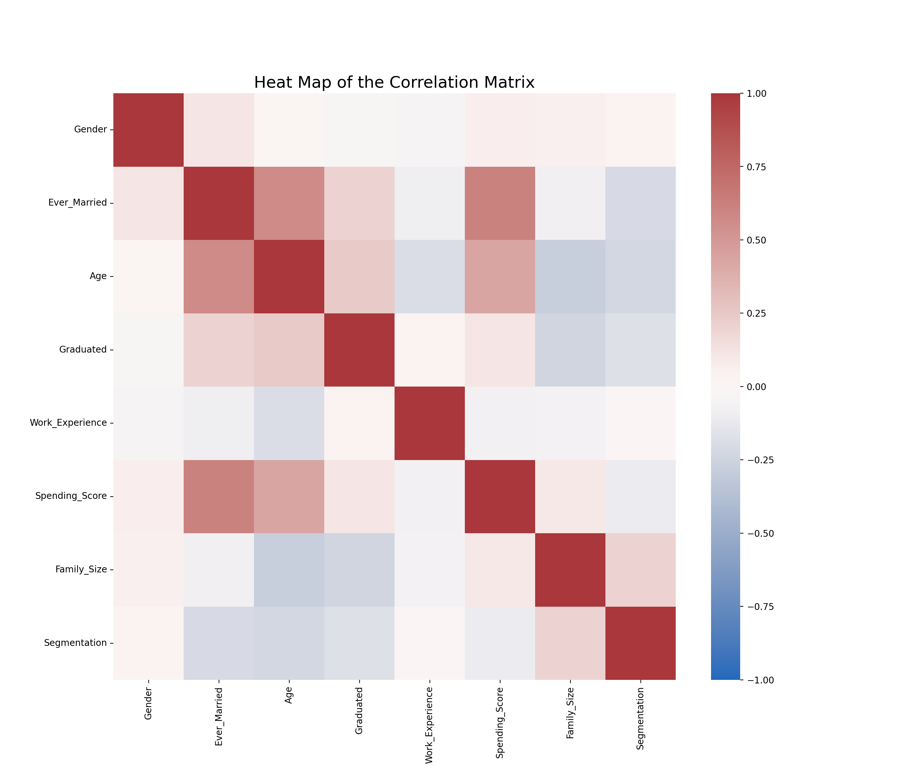

the data comes from twitter API
2.prepare the record dataAfter cleaning the data, this is the heat map of the correlation matrix of all the variables.
This data has 7 X variables: Gender, Married or not, Age, Graduated or not, Work Experience, Spending Score and Family Size. The label includes 4 classification: A, B, C, D. During the data preparation process, all the X variables are converted to numeric type and the y label is also converted to 1,2,3,4. Then I break data into 80-20 training/test sets. Since the variables are discrete, I use Multinomial Naive Bayes classification method to train the model. Finally, the accuracy is 0.4397 (where accuracy=0.25 means the model is absolutely useless). The heatmap of confusion matrix is as follows. The result shows that the performance of this model is not so good. From the matrix we can see that the model is more confused with catagory B and C.

you can see detailed .ipynb and .rmd files in "code/Naive Bayes"